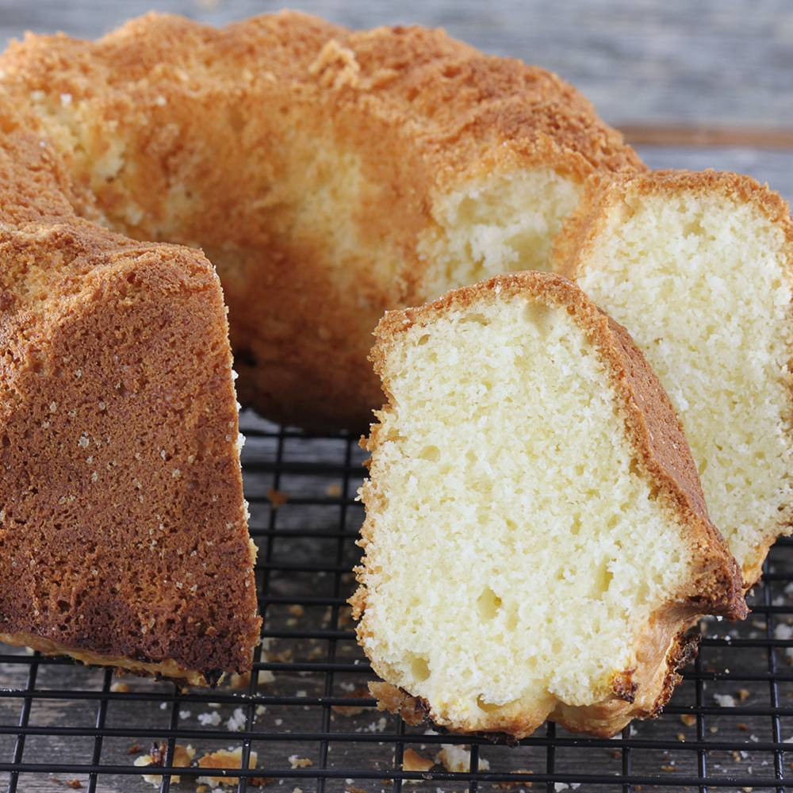

Home
Cake

The best lemon pound cake, which always turns out perfectly. I make it with real butter, which makes the cake delicious and fragrant.
The total time to prepare takes around 20 minutes, and it's not very complicated process.
Baking takes around 50 minutes to 1 hour.
Ingredients
- 200 grams of cake flour
- 100 grams of potato flour
- 3 medium-sized whole eggs
- 125 grams of butter
- 150 grams of sugar
- 3 flat teaspoons of baking powder
- 100 milliliters of fresh lemon juice (two lemons)
- Pinch of salt
Preparation Steps
- Remove the eggs and butter from the refrigerator in advance. They should reach room temperature.
- Combine the flour and baking powder in one bowl. It's a good idea to sift them together. In another bowl, combine the softened butter, sugar, egg yolks, and lemon juice and beat everything together with a mixer for about 5 minutes. After that, add the flour mixture and mix briefly. The batter will be quite thick.
- Wash and dry the beaters thoroughly. In a glass bowl, beat three egg whites until stiff peaks form. You can add a pinch of salt. Start at low speed and gradually increase to maximum speed. Mix for about 3 minutes. Gently fold the beaten egg whites into the batter with a spatula.
- Grease the inside of the pan with the remaining butter. Pour the thick batter into the center and smooth it out.
- Place the cake in an oven preheated to 170 degrees Celsius. Bake for about 55 minutes, or until a toothpick inserted into the cake comes out clean. Remember to leave the oven door slightly ajar for a few minutes first. Then you can remove the cake and let it cool on a wire rack.
Enjoy your cake!